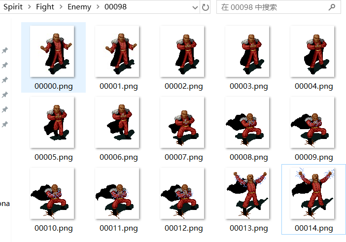
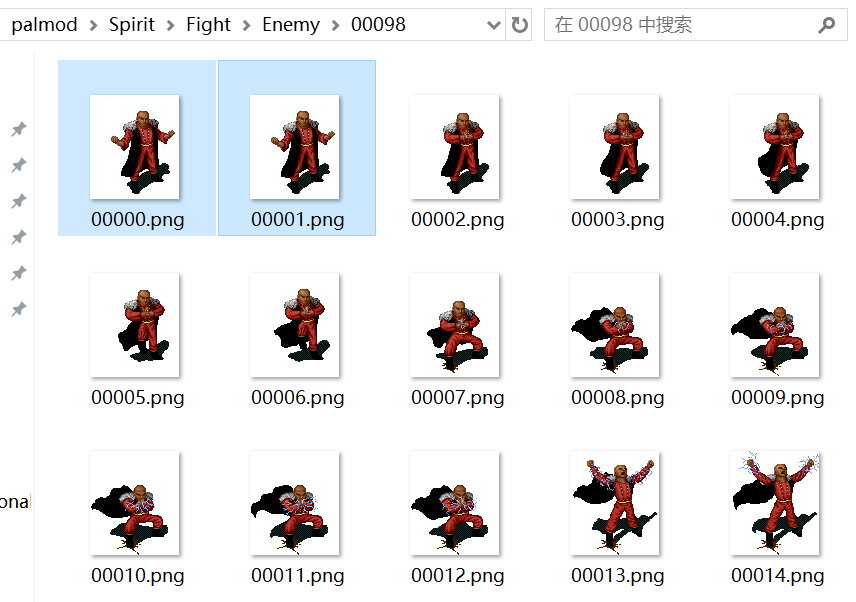
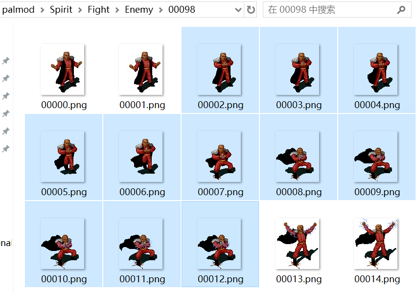
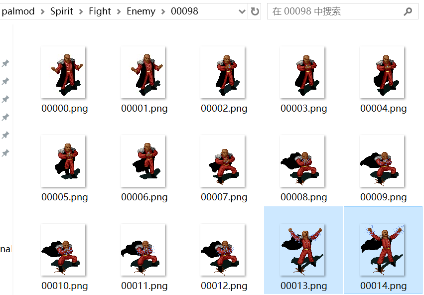
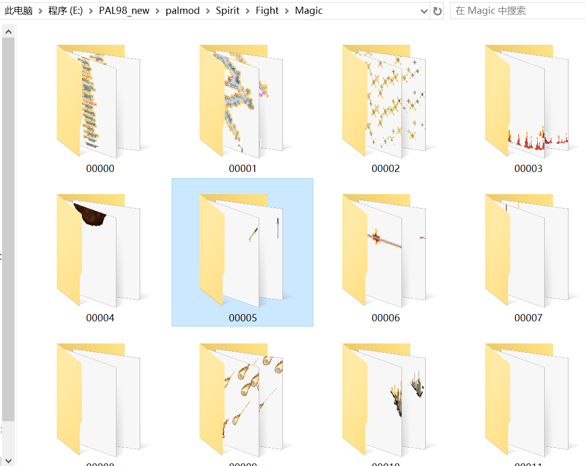
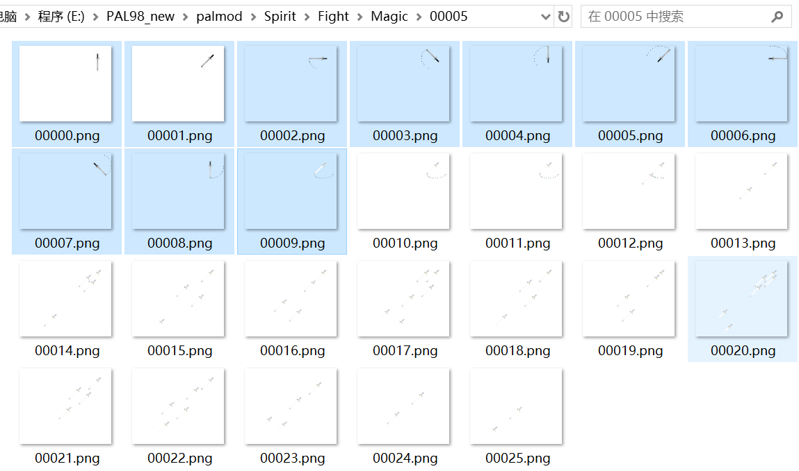
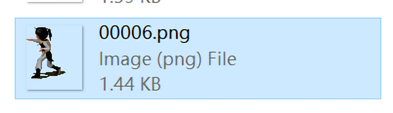
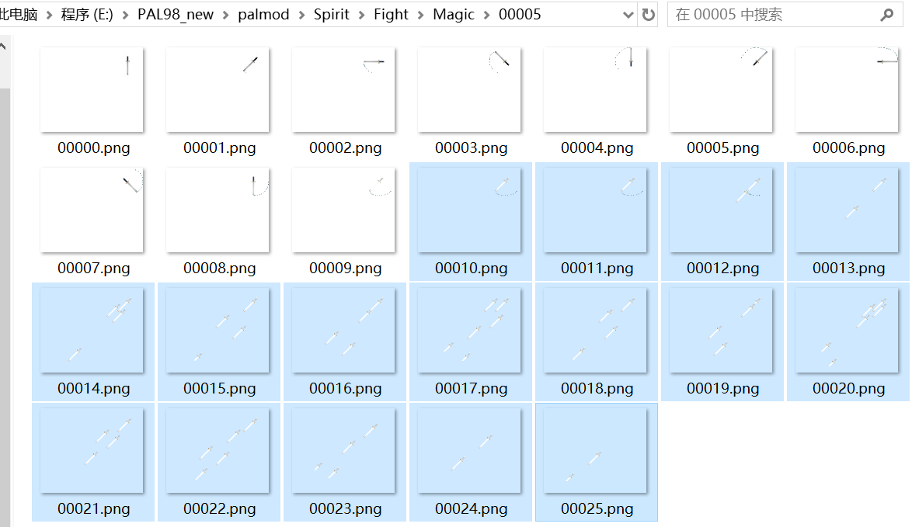

DATA.MKF（基础数据）二进制结构
#0 店铺售卖的商品：
每个店铺都可以有 9 种商品，数据为 9 种商品的实体编号
数据格式：ushort[9] {entityId1, entityId2, entityId3, ...... entityId9}
原始数据示例：a6 00 d1 00 ec 00 eb 00 c9 00 c6 00 00 00 00 00 00 00
十进制数据：166 209 236 235 201 198 0 0 0
实体数据：木剑|藤甲|木鞋|草鞋|皮帽|发饰|无|无|无
可以看得出，这组商品数据用于盛渔村林木匠
#1 敌人的基础数据：
每组数据有 70 字节，每个数据的单元大小都是 16 位的。
ABC.MKF 中行动动画的编号 = 当前敌人的基础数据地址 ÷ 每组数据的大小（70）
这里以狂徒废案“光头杀手”为例：
原始数据示例（地址为：DATA.MKF#1 0x1ACC）：
02 00 0b 00 02 00 05 00 02 00
00 00 00 00 00 00 00 00 00 00
00 00 bc 02 00 00 00 00 00 00
3d 01 0a 00 00 00 00 00 00 00
00 00 00 00 00 00 00 00 00 00
00 00 04 00 05 00 09 00 05 00
05 00 05 00 03 00 00 00 00 00
十进制数据：
2 11 2 5 2 0 0 0 0 0
0 700 0 0 0 317 10 0 0 0
0 0 0 0 0 0 4 5 9 5
5 5 3 0 0
对应 ABC.MKF 中行动动画的编号：98（0x1ACC ÷ 70）

数据格式如下：
原地蠕动帧数：2
施法帧：11
攻击帧：2
原地蠕动动画每帧间隔节拍：5（每隔 200ms【40ms × 5】 切换到下一帧）
行动动画每帧间隔节拍：2（每隔 80ms【40ms × 2】 切换到下一帧）
Y 轴偏移：0
音效-普攻：0
音效-行动：0
音效-施法：0
音效-阵亡：0
音效-进入战场时呼喊：0
体力：700
战利品-经验值：0
战利品-金钱：0
修行：0
法术：317（五雷咒）
施法概率：10（十分比，即 100％）
普攻附带道具：0（无）
普攻附带道具概率：0（十分比，即 0％）
可偷道具：0
可偷道具数量：0
武术：0
灵力：0
防御：0
身法：0
吉运：0
毒抗：4（十分比，即 40%）
灵抗：5 9 5 5 5（风雷水火土，十分比，50% 90% 50% 50% 50%）
物抗：3（十分比，即 30%）
二动：0（每回合能连续行动两次【是：不为 0】【否：0】，即否）
灵葫能量：0
先看前三项：【2 11 2】5 2 0 0 0 0 0 0 700 0 0 0 317 10 0 0 0 0 0 0 0 0 0 4 5 9 5 5 5 3 0 0
原地蠕动帧数：2（从编号 0 开始向后数 2 帧，该区间左闭右开，即不包括 2）

施法帧：11（从编号 2 开始向后数 11 帧，该区间左闭右开，即不包括 13【2 + 11】）

攻击帧：2（从编号 13 开始向后数 2 帧，该区间左闭右开，即不包括 15【13 + 2】）

接着往后看：2 11 2【5 2】0 0 0 0 0 0 700 0 0 0 317 10 0 0 0 0 0 0 0 0 0 4 5 9 5 5 5 3 0 0
原地蠕动动画每帧间隔节拍：5
行动动画每帧间隔节拍：2
战斗中正常待机循环为每 40ms 为一个节拍（刷新一次），即 FPS 25
但很多地方使用了固定延迟时间，基本上都在回合执行行动期间
这里的“间隔节拍”代表每过几个节拍切换到下一帧
光头杀手的“原地蠕动动画”每隔 200ms【40ms × 5】切换下一帧
光头杀手的“行动动画”每隔 200ms【40ms × 5】切换下一帧
接着往后看：2 11 2 5 2【0】0 0 0 0 0 700 0 0 0 317 10 0 0 0 0 0 0 0 0 0 4 5 9 5 5 5 3 0 0
Y 轴偏移：0（有些敌人贴图过高/过低，就需要对 Y 轴进行调整。这里是 0，没有变化）
接着往后看：2 11 2 5 2 0【0 0 0 0 0】700 0 0 0 317 10 0 0 0 0 0 0 0 0 0 4 5 9 5 5 5 3 0 0
音效对应 VOC.MKF/SOUNDS.MKF 里的声音文件，缺省则不播放
音效-普攻：0（WIN 版二动的敌人执行两次普攻时，播放的是施法音效）
音效-行动：0
音效-施法：0（WIN 版敌人的施法音效 ＜0 时，不会播放仙术特效的声音）
音效-阵亡：0
音效-进入战场时呼喊：0
接着往后看：2 11 2 5 2 0 0 0 0 0 0 700 0 0【0】317 10 0 0 0 0【0 0 0 0 0】4 5 9 5 5 5 3 0 0
修行：0
武术：0
灵力：0
防御：0
身法：0
吉运：0
众所周知，游戏内我方角色每次提升修行，HPMP、五维（武灵防速逃）都会跟着提升
其实敌人的五维也会跟随修行增长，但 HPMP 不会。而且这里给出的五维只是初始化五维，需要在战斗时动态计算修行额外加上的属性值。
以下是光头杀手的实际五维：
DOS 版武术：36【初始化武术 + 36 + 修行 * 6】
WIN 版武术：50【初始化武术 + 50 + 修行 * 5】
DOS 版灵力：36【初始化灵力 + 36 + 修行 * 6】
WIN 版灵力：50【初始化武术 + 50 + 修行 * 5】
DOS 版防御：24【初始化防御 + 24 + 修行 * 4】
WIN 版防御：18【初始化防御 + 18 + 修行 * 3】
DOS 版身法：18【初始化身法 + 18 + 修行 * 3】
WIN 版身法：18【初始化身法 + 18 + 修行 * 3】
DOS 版吉运：24【初始化身法 + 24 + 修行 * 4】
WIN 版吉运：12【初始化身法 + 12 + 修行 * 2】
#2 敌方队列：
每个敌方队列都可以有 5 个敌人，数据为 5 个敌人的实体编号（【禁用：-1；空：0】）
数据格式：ushort[5] {entityId1, entityId2, ...... entityId5}
原始数据示例1：8e 01 8e 01 ff ff ff ff ff ff
原始数据示例2：00 00 d9 01 00 00 ff ff ff ff
十进制数据1：398 398 -1 -1 -1
十进制数据2：0 473 0 -1 -1
实体数据1：史莱姆 |史莱姆 |禁用 |禁用 |禁用
实体数据2：无 |赤鬼王 |无 |禁用 |禁用
#3 Hero 的基础数据（初始数据）：
与之前的数据格式不太相同，它的存储方式是每项数据都按组存储，每组都是 6 名 Hero 的数据值。
数据格式：ushort[6] {hero0Value, hero1Value, ...... hero5Value}
整体格式如下：
| 数据意义 | Hero0 | Hero1 | Hero2 | Hero3 | Hero4 | Hero5 | 备注 |
|---|---|---|---|---|---|---|---|
| 肖像 | 1 | 11 | 22 | 49 | 28 | 44 | 对应 RGM.MKF 中的形象 |
| 战斗形象 | 0 | 1 | 2 | 3 | 4 | 8 | 对应 F.MKF 中的形象 |
| 行走形象 | 2 | 3 | 7 | 525 | 5 | 26 | 对应 MGO.MKF 中的形象 |
| 名称 | 24 李逍遥 |
25 赵灵儿 |
26 林月如 |
28 巫后 |
27 阿奴 |
29 盖罗娇 |
对应 M.MSG 中的实体名称 |
| 普攻全体 | 0 否 |
0 否 |
0 否 |
0 否 |
0 否 |
0 否 |
普攻可攻击敌方全体 |
| ？？？ | 0 | 0 | 0 | 0 | 0 | 0 | 未知，可能并未用到 |
| 修行 | 1 | 5 | 3 | 48 | 28 | 40 | 判定已练成的法术 |
| 最大 HP | 150 | 240 | 220 | 810 | 480 | 3600 | |
| 最大 MP | 100 | 240 | 80 | 790 | 410 | 720 | |
| HP | 150 | 28 | 220 | 810 | 480 | 3600 | ≤0死亡 ＜20%且＜100虚弱 |
| MP | 100 | 10 | 80 | 790 | 410 | 720 | |
| 头戴 | 196 头巾 |
197 青丝巾 |
199 银钗 |
202 珍珠冠 |
202 珍珠冠 |
202 珍珠冠 |
|
| 披挂 | 225 披风 |
0 无 |
228 护心镜 |
234 圣灵披风 |
231 虎纹披风 |
231 虎纹披风 |
|
| 身穿 | 208 布袍 |
210 丝衣 |
210 丝衣 |
210 丝衣 |
209 藤甲 |
215 铁鳞甲 |
|
| 手持 | 166 木剑 |
170 仙女剑 |
163 长鞭 |
195 天蛇杖 |
192 青蛇杖 |
193 鬼头杖 |
|
| 脚穿 | 235 草鞋 |
237 布靴 |
238 绣花鞋 |
243 莲花靴 |
0 无 |
244 虎皮靴 |
|
| 配带 | 249 护腕 |
248 香袋 |
253 玉镯 |
260 圣灵珠 |
251 竹笛 |
253 玉镯 |
|
| 武术 | 35 33 + 2 |
28 20 + 8 |
58 38 + 20 |
268 168 + 100 |
218 168 + 50 |
190 120 + 70 |
|
| 灵力 | 20 | 64 | 22 | 564 220 + 244 |
282 256 + 26 |
650 562 + 88 |
|
| 防御 | 41 32 + 9 |
41 28 + 13 |
72 35 + 37 |
284 110 + 174 |
176 136 + 40 |
254 136 + 118 |
|
| 身法 | 31 28 + 3 |
61 55 + 6 |
60 36 + 4 |
141 160 + 19 |
160 132 + 28 |
122 110 + 12 |
|
| 吉运 | 32 | 27 18 + 9 |
37 28 + 9 |
96 60 + 36 |
160 150 + 100 |
49 40 + 9 |
|
| 毒抗 | 0 | 0 | 0 | 0 | 0 | 0 | |
| 风抗 | 0 | 0 | 0 | 0 | 0 | 0 | |
| 雷抗 | 0 | 0 | 0 | 0 | 0 | 0 | |
| 水抗 | 0 | 0 | 0 | 0 | 0 | 0 | |
| 火抗 | 0 | 0 | 0 | 0 | 0 | 0 | |
| 土抗 | 0 | 0 | 0 | 0 | 0 | 0 | |
| ？？？ | 0 | 0 | 0 | 0 | 0 | 0 | 未知，可能并未用到 |
| ？？？ | 0 | 0 | 0 | 0 | 0 | 0 | 未知，可能并未用到 |
| ？？？ | 0 | 0 | 0 | 0 | 0 | 0 | 未知，可能并未用到 |
| 受援 | 2 林月如 |
0 李逍遥 |
0 李逍遥 |
0 李逍遥 |
0 李逍遥 |
4 阿奴 |
虚弱时受谁援护 |
| 仙术1 | 296 气疗术 |
312 风咒 |
298 凝神归元 |
295 梦蛇 |
353 御蜂术 |
353 御蜂术 |
每位 Hero 仅可练成 32 种法术 |
| 仙术2 | 0 无 |
316 雷咒 |
337 气剑指 |
304 夺魂 |
352 三尸咒 |
329 炎杀咒 |
|
| 仙术3 | 0 无 |
321 冰咒 |
0 无 |
299 元灵归心术 |
329 炎杀咒 |
323 风雪冰天 |
|
| 仙术4 | 0 无 |
327 炎咒 |
0 无 |
315 风神 |
318 天雷破 |
374 爆炸蛊 |
|
| 仙术5 | 0 无 |
332 土咒 |
0 无 |
320 雷神 |
394 乾坤一掷 |
308 灵血咒 |
|
| 仙术6 | 0 无 |
306 净衣咒 |
0 无 |
325 雪妖 |
308 灵血咒 |
298 凝神归元 |
|
| 仙术7 | 0 无 |
297 观音咒 |
0 无 |
389 火神 |
299 元灵归心 |
304 夺魂 |
|
| 仙术8 | 0 无 |
309 金刚咒 |
0 无 |
336 山神 |
302 赎魂 |
0 无 |
|
| 仙术9 | 0 无 |
303 回梦 |
0 无 |
302 赎魂 |
305 鬼降 |
0 无 |
|
| 仙术10 | 0 无 |
307 冰心诀 |
0 无 |
308 灵血咒 |
304 夺魂 |
0 无 |
|
| 仙术... | 0 无 |
0 无 |
0 无 |
0 无 |
0 无 |
0 无 |
|
| 仙术32 | 0 无 |
0 无 |
0 无 |
0 无 |
0 无 |
0 无 |
|
| 每方向帧数 | 0 | 0 | 0 | 0 | 0 | 0 | 行走形象每个方向的帧计数 缺省则为 3 |
| 合体法术 | 386 合体气功 |
381 爆炸 |
339 旋月斩 |
374 爆炸蛊 |
355 天女散花 |
381 爆炸 |
行走形象每个方向的帧计数 缺省则为 3 |
| ？？？ | 0 | 0 | 0 | 0 | 0 | 0 | 未知，可能并未用到 |
| ？？？ | 0 | 0 | 0 | 0 | 0 | 0 | 未知，可能并未用到 |
| 阵亡音效 | 23 | 24 | 25 | 24 | 26 | 25 | 对应 VOC.MKF/SOUNDS.MKF 中的音效 |
| 普攻音效 | 37 | 38 | 39 | 38 | 40 | 39 | |
| 武器挥砍音效 | 1 | 2 | 3 | 2 | 4 | 3 | |
| 普攻暴击音效 | 5 | 6 | 7 | 6 | 8 | 7 | |
| 施法音效 | 9 | 10 | 11 | 10 | 12 | 11 | |
| 武器格挡音效 | 15 | 16 | 17 | 16 | 18 | 17 | |
| 濒死音效 | 19 | 20 | 21 | 20 | 22 | 21 |
#4 仙术的基础数据：
每组数据有 32 字节，每个数据的单元大小都是 16 位的。
仙术包括普通仙术和召唤神
这里以普通仙术“御剑术”为例：
原始数据示例（地址为：DATA.MKF#4 0x0140）：
05 00 00 00 00 00 00 00 63 00 00 00 00 00 0a 00
00 00 00 00 00 00 00 00 0a 00 4d 00 00 00 7b 00
十进制数据：
5 0 0 0 99 0 0 10 0 0 0 0 10 77 0 123
| 数据意义 | 数值 | 备注 |
|---|---|---|
| 仙术动画 | 5 | 对应 FIRE.MKF 中仙术动画的编号 |
| 行动类型 | 0 | 攻击单人，单个特效 |
| X 轴偏移 | 0 | |
| Y 轴偏移 | 0 | |
| 图层偏移 | 99 | 实际图层 = Y坐标 + Y轴偏移 + 图层偏移 |
| 额外帧延迟 | 0 | 实际帧延迟(ms) = 50 + 额外帧延迟 * 10 |
| 破坏地面 | 0 否 |
将最后一帧留在地面上 【是：-1】【否：不为-1】 |
| 集气帧数 | 10 | DOS：集气帧数结束才播放音效 WIN：直接播放音效 |
| 重复次数 | 0 不重复 |
重复播放后续帧数多少遍 （集气帧数之后的帧数） |
| 屏幕震动幅度 | 0 不震动 |
动画播放完毕，最后一帧定格在场景，震动多少帧 |
| 屏幕波动 | 0 不波动 |
动画播放期间，战斗背景扭曲幅度 |
| ？？？ | 0 | 未知，可能并未用到 |
| 消耗真气 | 10 | 未知，可能并未用到 |
| 基础伤害 | 77 | 实际伤害还需带入受害者防御及各种抗性进行计算 |
| 系属 | 0 | 无【无：0】【五灵：1～5】【毒：6】【非攻击性：7】 |
| 音效 | 123 | 对应 VOC.MKF/SOUNDS.MKF 中的音效 |
先看前两项：【5 0】0 0 99 0 0 10 0 0 0 0 10 77 0 123
仙术动画：5（直接对应 FIRE.MKF 中仙术动画）

行动类型：0（攻击单人，单个特效）
以下是各个枚举意义：
| 行动类型 | 备注 |
|---|---|
| 0 | 攻击单人，单个特效 |
| 1 | 攻击全体，三个特效 |
| 2 | 攻击全体，单个特效 |
| 3 | 攻击全体，整屏特效 |
| 4 | 我方单人，单个特效 |
| 5 | 我方全体，三个特效 |
| 8 | 施法者本身 |
| 9 | 召唤神 |
接着往后看：5 0 0 0【99】0 0 10 0 0 0 0 10 77 0 123
图层偏移：99
该值用于调整仙术动画的实际图层，战场中以 Sprite 脚底的 Y 坐标来确定绘制顺序
| 实际 Y 坐标 = Y 坐标 + Y 轴偏移 |
| 这里写 99 可能是因为这里的御剑术在天上，故而图层需在所有 Sprite 之上 |
|
注意：
战场是斜 45 度的，从左上↖向右下↘倾斜，故越靠右下，图层越高，绘制优先级越低， 这样显现出的战斗场景才更有观感（画家算法）。 |
|---|
接着往后看：5 0 0 0 99【0】0 10 0 0 0 0 10 77 0 123
额外帧延迟：0
仙术动画的默认帧延迟为 50ms，此处的额外帧延迟的单位为 10ms，
若此处写 5 则代表动画帧延迟为 100ms（50ms + 5 * 10ms）
|
公式为：
实际帧延迟(ms) = 50 + 额外帧延迟 * 10 |
接着往后看：5 0 0 0 99 0 0【10 0】0 0 0 10 77 0 123
集气帧数：10
施法者于预演帧播放期间保持施法集气动作，播放后续帧数时才换为释放法术的动作
即前 10 帧（00000.png ～ 00009.png），施法者保持集气动作

从第 11 帧（00010.png）开始，施法者切换到释放法术的动作


|
注意：
DOS 版会等待预演帧播放结束，开始播放后续帧数时才播放仙术音效【与后续帧数同步】 WIN 版则是直接开始播放音效，不等待预演帧播放结束 |
|---|
重复次数：0（不重复）
|
注意：
只会重复后续帧数，也就是说集气帧数是不会重复播放的。 |
|---|
接着往后看：5 0 0 0 99 0 0 10 0 0 0 0 10【77】0 123
基础伤害：77
这里的基础伤害仅供参考，实际伤害是这样计算的：